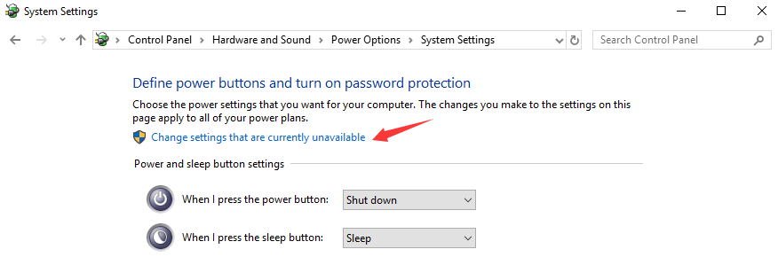
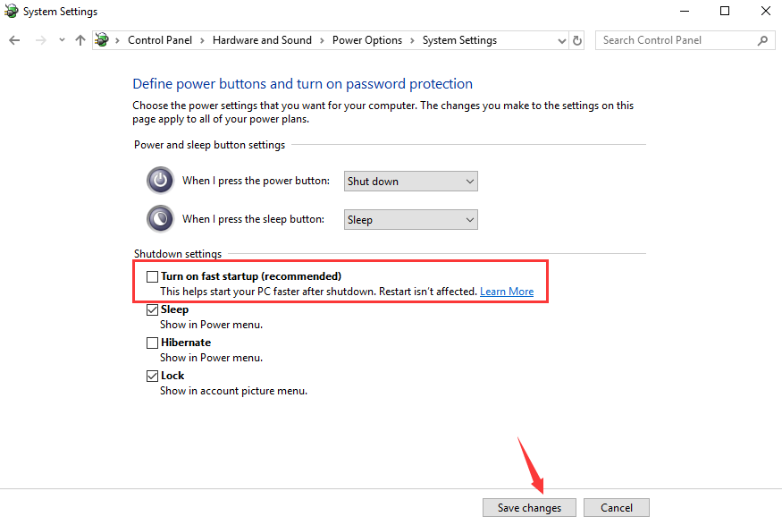

KMODE_EXCEPTION_NOT_HANDLED
Es un fallo del sistema que ocurre cuando un programa kernel causa una excepción que no puede ser identificada por el gestor de errores. Generalmente habrá un código de error 0x0000001E y ocasionalmente el sistema puede entrar en un bucle de reinicio.
Desactiva el Inicio Rápido
El inicio rápido de Windows es una función que los usuarios pueden usar para crear su propia preferencia de inicio. Está disponible en Windows 8 y Windows 10, y funciona de forma similar al modo hibernar de las versiones anteriores de Windows. Al guardar el sistema operativo en un estado de archivo de hibernación, el inicio rápido puede hacer que tu ordenador se inicie incluso más rápido.
Por otra parte, el inicio rápido también puede causar errores en el sistema cuando no puede ejecutar los controladores kernel. Aveces ocurre el problema de BSOD, así como el Kmode Exception Not Handled Error. Es posible que tengas que desactivar el inicio rápido para un inicio normal del sistema.
- Acceda al panel de control buscandolo en el icono de windows
- Busque "opciones de energia"
- Haz clic en "Elegir lo que pueden hacer los botones de Energía"
- Haz clic en "Cambia las opciones que no están actualmente disponibles" 
- Desactiva el tick de "Activar inicio rápido" y haz clic en guardar cambios y salir. 
Ejecuta el Diagnóstico de Memoria de Windows
El Diagnóstico de Memoria de Windows es un test de la memoria del sistema. Te puede ayudar a ver los problemas en la RAM del ordenador. Durante el proceso, habrá una barra con el estado, mostrando si se ha detectado algún problema. Además, el Diagnóstico de Memoria de Windows puede ayudarte a revisar el error
- Abre el "diagnostico de memoria de Windows" a través de la caja de búsqueda de Windows
- Haz clic en "reiniciar ahora y revisa los problemas (recomendado)"
Actualizar los controladores de dispositivo
Existe una gran posibilidad de que los controladores instalados en su ordenador esten causando este error. Actualizar sus controladores no es difícil. Simplemente diríjase al Administrador de dispositivos para actualizarlos.
Se recomendado que actualice sus controladores de gráficos, controladores de red, controladores de chipsets y controladores de dispositivos de entrada.